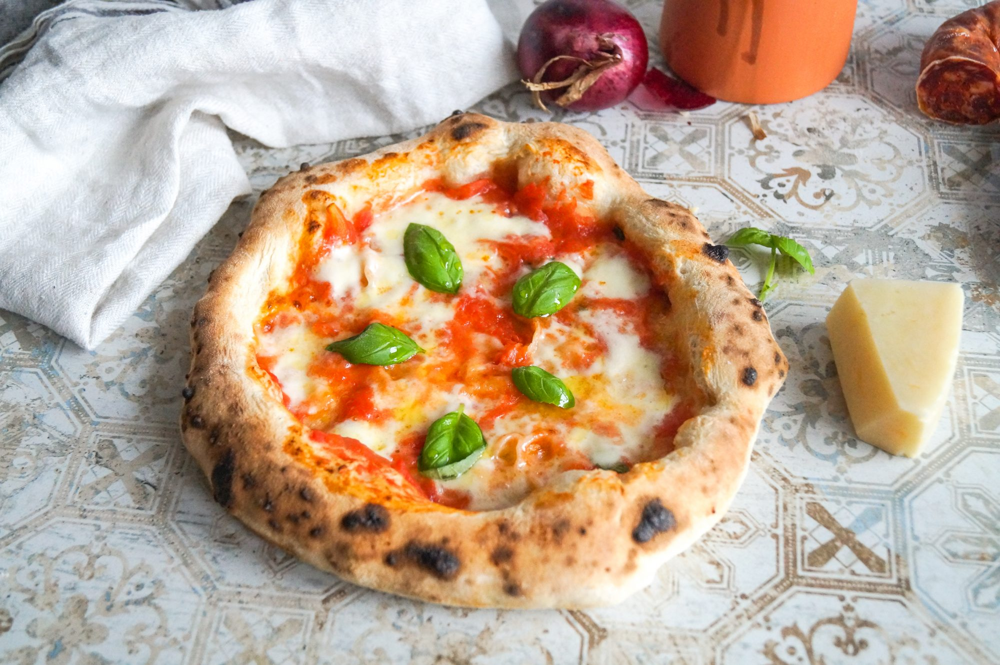

Neapolitan Pizza

The picture represents a Neapolitan Pizza
Neapolitan Pizza is the original Pizza, born in Naples, Italy.
Ingredients
- Spaghetti (320g)
- Peeled tomatoes (400g)
- Guanciale (150g)
- Pecorino Romano cheese (75g)
- Fine salt to taste
- Extra virgin olive oil to taste
- Fresh chili pepper (1)
Steps
- First of all boil the water to cook the pasta in, then add salt.
- To prepare the sauce, take the guanciale, remove the pork rind and cut it into 1cm thick slices and then into 0.5 cm wide strips.
- Add the cut guanciale into a hot anti-stick or stainless steel pan and cook it until it's crunchy.
- When the guanciale is done, remove it from the pan and transfer it to a plate. Pour the peeled tomatoes with a chili into the pan where you previously cooked the guanciale and cook for about 20 minutes.
- As soon as the water boils, pour in the spaghetti and cook them al dente
- To the sauce pan, add salt to taste, remove the chili and add the guanciale strips.
- Once the pasta is al dente, add it to the sauce pan as well. Mix it well with the sauce and when the pan is warm put the pecorino in and stir again.